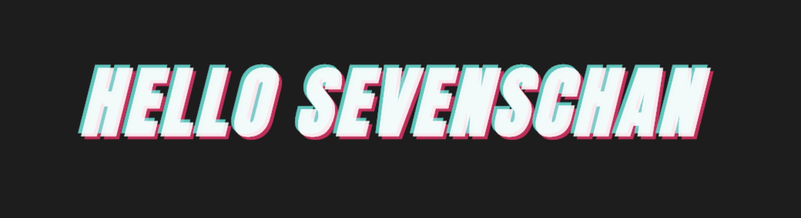
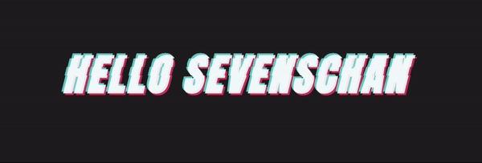

<!DOCTYPE html>


  


<html class="theme-next mist use-motion" lang="">
<head>
  <meta charset="UTF-8"/>
<meta http-equiv="X-UA-Compatible" content="IE=edge" />
<meta name="viewport" content="width=device-width, initial-scale=1, maximum-scale=1"/>
<meta name="theme-color" content="#222">


<meta http-equiv="Cache-Control" content="no-transform" />
<meta http-equiv="Cache-Control" content="no-siteapp" />


  
  
  <link href="/lib/fancybox/source/jquery.fancybox.css?v=2.1.5" rel="stylesheet" type="text/css" />


  
  
  
  

  
    
    
  

  

  

  

  

  
    
    
    <link href="//fonts.googleapis.com/css?family=Lato:300,300italic,400,400italic,700,700italic&subset=latin,latin-ext" rel="stylesheet" type="text/css">
  


<link href="/lib/font-awesome/css/font-awesome.min.css?v=4.6.2" rel="stylesheet" type="text/css" />

<link href="/css/main.css?v=5.1.2" rel="stylesheet" type="text/css" />


  <meta name="keywords" content="Sevens,JS,front-end" />


  <link rel="shortcut icon" type="image/x-icon" href="/favicon.ico?v=5.1.2" />


<meta name="description" content="Introduction策划看到下面的LOGO效果哭喊着叫设计师做做看，高傲的设计师鸟都不鸟她，然后找到了我，心软的IT男就尝试做一下。  Analysis仔细看其实感觉也不难，主要就是实现字体以后，在中间有一个抖动层上下移动来增加都动感，整体字体也有一点整体的抖动。 Before在开撸以前有两个CSS的函数可以认识一下 val( )通过元素style上设置’–test’格式的样式，通过val">
<meta property="og:type" content="article">
<meta property="og:title" content="CSS3 实现抖音LOGO STYLE">
<meta property="og:url" content="https://superhos.github.io/2018/12/14/douyin-style/index.html">
<meta property="og:site_name" content="Sevens Chan blog">
<meta property="og:description" content="Introduction策划看到下面的LOGO效果哭喊着叫设计师做做看，高傲的设计师鸟都不鸟她，然后找到了我，心软的IT男就尝试做一下。  Analysis仔细看其实感觉也不难，主要就是实现字体以后，在中间有一个抖动层上下移动来增加都动感，整体字体也有一点整体的抖动。 Before在开撸以前有两个CSS的函数可以认识一下 val( )通过元素style上设置’–test’格式的样式，通过val">
<meta property="og:locale" content="default">
<meta property="og:image" content="http://images.frontendjs.com/douyin-web-logo.gif">
<meta property="og:image" content="https://superhos.github.io/2018/12/14/douyin-style/shake-1.jpg">
<meta property="og:image" content="https://superhos.github.io/2018/12/14/douyin-style/shake-2.jpg">
<meta property="og:image" content="https://superhos.github.io/2018/12/14/douyin-style/dy-shake.gif">
<meta property="og:updated_time" content="2018-12-14T06:20:36.001Z">
<meta name="twitter:card" content="summary">
<meta name="twitter:title" content="CSS3 实现抖音LOGO STYLE">
<meta name="twitter:description" content="Introduction策划看到下面的LOGO效果哭喊着叫设计师做做看，高傲的设计师鸟都不鸟她，然后找到了我，心软的IT男就尝试做一下。  Analysis仔细看其实感觉也不难，主要就是实现字体以后，在中间有一个抖动层上下移动来增加都动感，整体字体也有一点整体的抖动。 Before在开撸以前有两个CSS的函数可以认识一下 val( )通过元素style上设置’–test’格式的样式，通过val">
<meta name="twitter:image" content="http://images.frontendjs.com/douyin-web-logo.gif">


<script type="text/javascript" id="hexo.configurations">
  var NexT = window.NexT || {};
  var CONFIG = {
    root: '/',
    scheme: 'Mist',
    sidebar: {"position":"left","display":"post","offset":12,"offset_float":12,"b2t":false,"scrollpercent":false,"onmobile":false},
    fancybox: true,
    tabs: true,
    motion: true,
    duoshuo: {
      userId: '0',
      author: 'Author'
    },
    algolia: {
      applicationID: '',
      apiKey: '',
      indexName: '',
      hits: {"per_page":10},
      labels: {"input_placeholder":"Search for Posts","hits_empty":"We didn't find any results for the search: ${query}","hits_stats":"${hits} results found in ${time} ms"}
    }
  };
</script>


  <link rel="canonical" href="https://superhos.github.io/2018/12/14/douyin-style/"/>


<link rel="stylesheet" href="https://imsun.github.io/gitment/style/default.css">
<script src="https://www.wenjunjiang.win/js/gitment.js"></script>


  <title>CSS3 实现抖音LOGO STYLE | Sevens Chan blog</title>
  


</head>

<body itemscope itemtype="http://schema.org/WebPage" lang="default">

  
  
    
  

  <div class="container sidebar-position-left page-post-detail ">
    <div class="headband"></div>

    <header id="header" class="header" itemscope itemtype="http://schema.org/WPHeader">
      <div class="header-inner"><div class="site-brand-wrapper">
  <div class="site-meta ">
    

    <div class="custom-logo-site-title">
      <a href="/"  class="brand" rel="start">
        <span class="logo-line-before"><i></i></span>
        <span class="site-title">Sevens Chan blog</span>
        <span class="logo-line-after"><i></i></span>
      </a>
    </div>
      
        <p class="site-subtitle">陈日天技术博客</p>
      
  </div>

  <div class="site-nav-toggle">
    <button>
      <span class="btn-bar"></span>
      <span class="btn-bar"></span>
      <span class="btn-bar"></span>
    </button>
  </div>
</div>

<nav class="site-nav">
  

  
    <ul id="menu" class="menu">
      
        
        <li class="menu-item menu-item-home">
          <a href="/" rel="section">
            
              <i class="menu-item-icon fa fa-fw fa-home"></i> <br />
            
            Home
          </a>
        </li>
      
        
        <li class="menu-item menu-item-archives">
          <a href="/archives/" rel="section">
            
              <i class="menu-item-icon fa fa-fw fa-archive"></i> <br />
            
            Archives
          </a>
        </li>
      
        
        <li class="menu-item menu-item-tags">
          <a href="/tags/" rel="section">
            
              <i class="menu-item-icon fa fa-fw fa-tags"></i> <br />
            
            Tags
          </a>
        </li>
      

      
    </ul>
  

  
</nav>


 </div>
    </header>

    <main id="main" class="main">
      <div class="main-inner">
        <div class="content-wrap">
          <div id="content" class="content">
            

  <div id="posts" class="posts-expand">
    

  

  
  
  

  <article class="post post-type-normal" itemscope itemtype="http://schema.org/Article">
  
  
  
  <div class="post-block">
    <link itemprop="mainEntityOfPage" href="https://superhos.github.io/2018/12/14/douyin-style/">

    <span hidden itemprop="author" itemscope itemtype="http://schema.org/Person">
      <meta itemprop="name" content="SevensChan">
      <meta itemprop="description" content="">
      <meta itemprop="image" content="/images/avatar.gif">
    </span>

    <span hidden itemprop="publisher" itemscope itemtype="http://schema.org/Organization">
      <meta itemprop="name" content="Sevens Chan blog">
    </span>

    
      <header class="post-header">

        
        
          <h1 class="post-title" itemprop="name headline">CSS3 实现抖音LOGO STYLE</h1>
        

        <div class="post-meta">
          <span class="post-time">
            
              <span class="post-meta-item-icon">
                <i class="fa fa-calendar-o"></i>
              </span>
              
                <span class="post-meta-item-text">Posted on</span>
              
              <time title="Post created" itemprop="dateCreated datePublished" datetime="2018-12-14T10:14:33+08:00">
                2018-12-14
              </time>
            

            

            
          </span>

          

          
            
          

          
          

          

          

          

        </div>
      </header>
    

    
    
    
    
    <div class="post-body" itemprop="articleBody">

      
      

      
        <h3 id="Introduction"><a href="#Introduction" class="headerlink" title="Introduction"></a>Introduction</h3><p>策划看到下面的LOGO效果哭喊着叫设计师做做看，高傲的设计师鸟都不鸟她，然后找到了我，心软的IT男就尝试做一下。</p>
<p></p>
<h3 id="Analysis"><a href="#Analysis" class="headerlink" title="Analysis"></a>Analysis</h3><p>仔细看其实感觉也不难，主要就是实现字体以后，在中间有一个抖动层上下移动来增加都动感，整体字体也有一点整体的抖动。</p>
<h3 id="Before"><a href="#Before" class="headerlink" title="Before"></a>Before</h3><p>在开撸以前有两个CSS的函数可以认识一下</p>
<h4 id="val"><a href="#val" class="headerlink" title="val( )"></a>val( )</h4><p>通过元素style上设置’–test’格式的样式，通过<code>val()</code>就可以读取到相应的属性。Demo:<br><figure class="highlight html"><table><tr><td class="gutter"><pre><span class="line">1</span><br><span class="line">2</span><br></pre></td><td class="code"><pre><span class="line"><span class="tag">&lt;<span class="name">div</span> <span class="attr">class</span>=<span class="string">"demo"</span> <span class="attr">style</span>=<span class="string">"--test:400px"</span>&gt;</span></span><br><span class="line"><span class="tag">&lt;/<span class="name">div</span>&gt;</span></span><br></pre></td></tr></table></figure></p>
<figure class="highlight css"><table><tr><td class="gutter"><pre><span class="line">1</span><br><span class="line">2</span><br><span class="line">3</span><br></pre></td><td class="code"><pre><span class="line"><span class="selector-class">.demo</span> &#123;</span><br><span class="line">    <span class="attribute">width</span>: <span class="built_in">val</span>(--test);</span><br><span class="line">&#125;</span><br></pre></td></tr></table></figure>
<p>Reference:<br><a href="https://developer.mozilla.org/en-US/docs/Web/CSS/--*" target="_blank" rel="noopener">MDN-val()</a></p>
<h4 id="attr"><a href="#attr" class="headerlink" title="attr( )"></a>attr( )</h4><p>通过元素上设置’data-*’属性，通过<code>attr()</code>就可以读取到相应的属性。</p>
<p>Demo:<br><figure class="highlight html"><table><tr><td class="gutter"><pre><span class="line">1</span><br><span class="line">2</span><br></pre></td><td class="code"><pre><span class="line"><span class="tag">&lt;<span class="name">div</span> <span class="attr">class</span>=<span class="string">"demo"</span> <span class="attr">data-content</span>=<span class="string">"Hello world"</span>&gt;</span></span><br><span class="line"><span class="tag">&lt;/<span class="name">div</span>&gt;</span></span><br></pre></td></tr></table></figure></p>
<figure class="highlight css"><table><tr><td class="gutter"><pre><span class="line">1</span><br><span class="line">2</span><br><span class="line">3</span><br></pre></td><td class="code"><pre><span class="line"><span class="selector-class">.demo</span> &#123;</span><br><span class="line">    <span class="attribute">content</span>: <span class="built_in">attr</span>(data-content)</span><br><span class="line">&#125;</span><br></pre></td></tr></table></figure>
<p>Reference:<br><a href="https://developer.mozilla.org/en-US/docs/Web/CSS/attr" target="_blank" rel="noopener">MDN-attr()</a></p>
<h3 id="开撸"><a href="#开撸" class="headerlink" title="开撸"></a>开撸</h3><h4 id="基础字体"><a href="#基础字体" class="headerlink" title="基础字体"></a>基础字体</h4><p>分析下，字体其实有三层，最上一层偏绿色，中间是白色，最后一层偏红色：<br><figure class="highlight html"><table><tr><td class="gutter"><pre><span class="line">1</span><br><span class="line">2</span><br><span class="line">3</span><br><span class="line">4</span><br><span class="line">5</span><br><span class="line">6</span><br><span class="line">7</span><br><span class="line">8</span><br></pre></td><td class="code"><pre><span class="line"><span class="tag">&lt;<span class="name">link</span> <span class="attr">href</span>=<span class="string">"https://fonts.googleapis.com/css?family=Anton"</span> <span class="attr">rel</span>=<span class="string">"stylesheet"</span>&gt;</span></span><br><span class="line"><span class="tag">&lt;<span class="name">div</span> <span class="attr">class</span>=<span class="string">"douyin-style"</span>&gt;</span></span><br><span class="line">    <span class="tag">&lt;<span class="name">div</span> <span class="attr">class</span>=<span class="string">"douyin-style-font"</span>&gt;</span></span><br><span class="line">        <span class="tag">&lt;<span class="name">div</span> <span class="attr">class</span>=<span class="string">"douyin-style-title"</span> <span class="attr">data-title</span>=<span class="string">"HELLO SEVENSCHAN"</span>&gt;</span></span><br><span class="line">        <span class="tag">&lt;<span class="name">span</span>&gt;</span>HELLO SEVENSCHAN<span class="tag">&lt;/<span class="name">span</span>&gt;</span></span><br><span class="line">        <span class="tag">&lt;/<span class="name">div</span>&gt;</span></span><br><span class="line">    <span class="tag">&lt;/<span class="name">div</span>&gt;</span></span><br><span class="line"><span class="tag">&lt;/<span class="name">div</span>&gt;</span></span><br></pre></td></tr></table></figure></p>
<figure class="highlight css"><table><tr><td class="gutter"><pre><span class="line">1</span><br><span class="line">2</span><br><span class="line">3</span><br><span class="line">4</span><br><span class="line">5</span><br><span class="line">6</span><br><span class="line">7</span><br><span class="line">8</span><br><span class="line">9</span><br><span class="line">10</span><br><span class="line">11</span><br><span class="line">12</span><br><span class="line">13</span><br><span class="line">14</span><br><span class="line">15</span><br><span class="line">16</span><br><span class="line">17</span><br><span class="line">18</span><br><span class="line">19</span><br><span class="line">20</span><br><span class="line">21</span><br><span class="line">22</span><br><span class="line">23</span><br><span class="line">24</span><br><span class="line">25</span><br><span class="line">26</span><br><span class="line">27</span><br><span class="line">28</span><br><span class="line">29</span><br><span class="line">30</span><br><span class="line">31</span><br><span class="line">32</span><br><span class="line">33</span><br><span class="line">34</span><br><span class="line">35</span><br><span class="line">36</span><br><span class="line">37</span><br><span class="line">38</span><br><span class="line">39</span><br><span class="line">40</span><br><span class="line">41</span><br><span class="line">42</span><br><span class="line">43</span><br><span class="line">44</span><br><span class="line">45</span><br></pre></td><td class="code"><pre><span class="line"><span class="selector-class">.douyin-style-font</span> &#123;</span><br><span class="line">  <span class="attribute">font-weight</span>: <span class="number">700</span>;</span><br><span class="line">  <span class="attribute">width</span>:<span class="number">450px</span>;</span><br><span class="line">  <span class="attribute">position</span>: relative;</span><br><span class="line">  <span class="comment">/** font style **/</span></span><br><span class="line">  <span class="attribute">font-size</span>: <span class="number">50px</span>;</span><br><span class="line">  <span class="attribute">font-style</span>: italic;</span><br><span class="line">  <span class="attribute">font-weight</span>: bold;</span><br><span class="line">  <span class="attribute">letter-spacing</span>: <span class="number">3px</span>;</span><br><span class="line">  <span class="attribute">font-family</span>: <span class="string">'Anton'</span>, sans-serif;</span><br><span class="line">&#125;</span><br><span class="line"></span><br><span class="line"><span class="selector-class">.douyin-style-font</span> <span class="selector-class">.douyin-style-title</span> &#123;</span><br><span class="line">  <span class="attribute">position</span>: absolute;</span><br><span class="line">  <span class="attribute">top</span>: <span class="number">3px</span>;</span><br><span class="line">  <span class="attribute">left</span>: <span class="number">3px</span>;</span><br><span class="line">  <span class="attribute">width</span>: inherit;</span><br><span class="line">&#125;</span><br><span class="line"></span><br><span class="line"><span class="selector-class">.douyin-style-font</span> <span class="selector-class">.douyin-style-title</span><span class="selector-pseudo">:before</span> &#123;</span><br><span class="line">  <span class="attribute">position</span>: absolute;</span><br><span class="line">  <span class="attribute">top</span>: -<span class="number">2px</span>;</span><br><span class="line">  <span class="attribute">left</span>: -<span class="number">2px</span>;</span><br><span class="line">  <span class="attribute">color</span>: <span class="number">#00f5e7</span>;</span><br><span class="line">  <span class="attribute">opacity</span>: .<span class="number">8</span>;</span><br><span class="line">  <span class="attribute">z-index</span>: <span class="number">2</span>;</span><br><span class="line">  <span class="attribute">content</span>: <span class="built_in">attr</span>(data-title);</span><br><span class="line">&#125;</span><br><span class="line"></span><br><span class="line"><span class="selector-class">.douyin-style-font</span> <span class="selector-class">.douyin-style-title</span> <span class="selector-tag">span</span>&#123;</span><br><span class="line">  <span class="attribute">position</span>: relative;</span><br><span class="line">  <span class="attribute">color</span>: <span class="number">#FFF</span>;</span><br><span class="line">  <span class="attribute">z-index</span>: <span class="number">3</span>;</span><br><span class="line">  <span class="attribute">opacity</span>: .<span class="number">9</span>;</span><br><span class="line">&#125;</span><br><span class="line"></span><br><span class="line"><span class="selector-class">.douyin-style-font</span> <span class="selector-class">.douyin-style-title</span><span class="selector-pseudo">:after</span> &#123;</span><br><span class="line">  <span class="attribute">position</span>: absolute;</span><br><span class="line">  <span class="attribute">top</span>: <span class="number">2px</span>;</span><br><span class="line">  <span class="attribute">left</span>: <span class="number">2px</span>;</span><br><span class="line">  <span class="attribute">opacity</span>: .<span class="number">8</span>;</span><br><span class="line">  <span class="attribute">color</span>: <span class="number">#ff0068</span>;</span><br><span class="line">  <span class="attribute">z-index</span>: <span class="number">1</span>;</span><br><span class="line">  <span class="attribute">content</span>: <span class="built_in">attr</span>(data-title);</span><br><span class="line">&#125;</span><br></pre></td></tr></table></figure>
<p>这里用了google的字体服务，没翻墙的朋友换个字体就可以，可以看下效果：</p>
<p></p>
<h4 id="摇屁股动画"><a href="#摇屁股动画" class="headerlink" title="摇屁股动画"></a>摇屁股动画</h4><p>然后开始添加动画特效，让字体轻轻的摇下屁股<br><figure class="highlight css"><table><tr><td class="gutter"><pre><span class="line">1</span><br><span class="line">2</span><br><span class="line">3</span><br><span class="line">4</span><br><span class="line">5</span><br><span class="line">6</span><br><span class="line">7</span><br><span class="line">8</span><br><span class="line">9</span><br><span class="line">10</span><br><span class="line">11</span><br><span class="line">12</span><br><span class="line">13</span><br><span class="line">14</span><br><span class="line">15</span><br><span class="line">16</span><br><span class="line">17</span><br><span class="line">18</span><br><span class="line">19</span><br><span class="line">20</span><br><span class="line">21</span><br></pre></td><td class="code"><pre><span class="line"><span class="selector-class">.douyin-style-font</span> &#123;</span><br><span class="line">  <span class="attribute">font-weight</span>: <span class="number">700</span>;</span><br><span class="line">  <span class="attribute">width</span>:<span class="number">450px</span>;</span><br><span class="line">  <span class="attribute">position</span>: relative;</span><br><span class="line">  <span class="attribute">animation</span>: debounce <span class="number">1s</span> <span class="built_in">steps</span>(3) infinite;</span><br><span class="line">  <span class="comment">/** font style **/</span></span><br><span class="line">  <span class="attribute">font-size</span>: <span class="number">50px</span>;</span><br><span class="line">  <span class="attribute">font-style</span>: italic;</span><br><span class="line">  <span class="attribute">font-weight</span>: bold;</span><br><span class="line">  <span class="attribute">letter-spacing</span>: <span class="number">3px</span>;</span><br><span class="line">  <span class="attribute">font-family</span>: <span class="string">'Anton'</span>, sans-serif;</span><br><span class="line">&#125;</span><br><span class="line"></span><br><span class="line">@<span class="keyword">keyframes</span> debounce &#123;</span><br><span class="line">  0% &#123;</span><br><span class="line">    <span class="attribute">margin-left</span>: <span class="number">2px</span>;</span><br><span class="line">  &#125;</span><br><span class="line">  0% &#123;</span><br><span class="line">    <span class="attribute">margin-left</span>: -<span class="number">4px</span>;</span><br><span class="line">  &#125;</span><br><span class="line">&#125;</span><br></pre></td></tr></table></figure></p>
<h4 id="遮罩层动画"><a href="#遮罩层动画" class="headerlink" title="遮罩层动画"></a>遮罩层动画</h4><p></p>
<p>可以看到，中间是有一个偏移的字体逐帧动画的形式在上下跳动，加入一个跳动层<br><figure class="highlight html"><table><tr><td class="gutter"><pre><span class="line">1</span><br><span class="line">2</span><br><span class="line">3</span><br><span class="line">4</span><br><span class="line">5</span><br><span class="line">6</span><br><span class="line">7</span><br><span class="line">8</span><br><span class="line">9</span><br><span class="line">10</span><br><span class="line">11</span><br><span class="line">12</span><br><span class="line">13</span><br><span class="line">14</span><br><span class="line">15</span><br><span class="line">16</span><br><span class="line">17</span><br></pre></td><td class="code"><pre><span class="line"><span class="tag">&lt;<span class="name">div</span> <span class="attr">class</span>=<span class="string">"douyin-style"</span>&gt;</span></span><br><span class="line">  <span class="tag">&lt;<span class="name">div</span> <span class="attr">class</span>=<span class="string">"douyin-style-font"</span>&gt;</span></span><br><span class="line">    <span class="tag">&lt;<span class="name">div</span> <span class="attr">class</span>=<span class="string">"douyin-style-title"</span> <span class="attr">data-title</span>=<span class="string">"HELLO SEVENSCHAN"</span>&gt;</span></span><br><span class="line">      <span class="tag">&lt;<span class="name">span</span>&gt;</span>HELLO SEVENSCHAN<span class="tag">&lt;/<span class="name">span</span>&gt;</span></span><br><span class="line">    <span class="tag">&lt;/<span class="name">div</span>&gt;</span></span><br><span class="line">  <span class="tag">&lt;/<span class="name">div</span>&gt;</span></span><br><span class="line">  <span class="tag">&lt;<span class="name">div</span> <span class="attr">class</span>=<span class="string">"douyin-style-font shake"</span> <span class="attr">style</span>=<span class="string">"--shake-offset: -2px; --shake-height: 20px;--shake-delay:0s;"</span>&gt;</span></span><br><span class="line">    <span class="tag">&lt;<span class="name">div</span> <span class="attr">class</span>=<span class="string">"douyin-style-title"</span> <span class="attr">data-title</span>=<span class="string">"HELLO SEVENSCHAN"</span>&gt;</span></span><br><span class="line">      <span class="tag">&lt;<span class="name">span</span>&gt;</span>HELLO SEVENSCHAN<span class="tag">&lt;/<span class="name">span</span>&gt;</span></span><br><span class="line">    <span class="tag">&lt;/<span class="name">div</span>&gt;</span></span><br><span class="line">  <span class="tag">&lt;/<span class="name">div</span>&gt;</span></span><br><span class="line">  <span class="tag">&lt;<span class="name">div</span> <span class="attr">class</span>=<span class="string">"douyin-style-font shake"</span> <span class="attr">style</span>=<span class="string">"--shake-offset: -5px; --shake-height: 10px;--shake-delay:0.5s;"</span>&gt;</span></span><br><span class="line">    <span class="tag">&lt;<span class="name">div</span> <span class="attr">class</span>=<span class="string">"douyin-style-title"</span> <span class="attr">data-title</span>=<span class="string">"HELLO SEVENSCHAN"</span>&gt;</span></span><br><span class="line">      <span class="tag">&lt;<span class="name">span</span>&gt;</span>HELLO SEVENSCHAN<span class="tag">&lt;/<span class="name">span</span>&gt;</span></span><br><span class="line">    <span class="tag">&lt;/<span class="name">div</span>&gt;</span></span><br><span class="line">  <span class="tag">&lt;/<span class="name">div</span>&gt;</span></span><br><span class="line"><span class="tag">&lt;/<span class="name">div</span>&gt;</span></span><br></pre></td></tr></table></figure></p>
<p>跳动层的内容跟原图层一致，只是增加了shake类和一些style。</p>
<figure class="highlight css"><table><tr><td class="gutter"><pre><span class="line">1</span><br><span class="line">2</span><br><span class="line">3</span><br><span class="line">4</span><br><span class="line">5</span><br><span class="line">6</span><br><span class="line">7</span><br><span class="line">8</span><br><span class="line">9</span><br><span class="line">10</span><br><span class="line">11</span><br><span class="line">12</span><br><span class="line">13</span><br><span class="line">14</span><br><span class="line">15</span><br><span class="line">16</span><br><span class="line">17</span><br><span class="line">18</span><br><span class="line">19</span><br><span class="line">20</span><br><span class="line">21</span><br><span class="line">22</span><br><span class="line">23</span><br><span class="line">24</span><br><span class="line">25</span><br><span class="line">26</span><br><span class="line">27</span><br><span class="line">28</span><br><span class="line">29</span><br><span class="line">30</span><br><span class="line">31</span><br><span class="line">32</span><br><span class="line">33</span><br></pre></td><td class="code"><pre><span class="line"><span class="selector-class">.douyin-style-font</span><span class="selector-class">.shake</span> &#123;</span><br><span class="line">  <span class="attribute">position</span>: absolute;</span><br><span class="line">  <span class="attribute">z-index</span>: <span class="number">9</span>;</span><br><span class="line">  <span class="attribute">left</span>: <span class="built_in">var</span>(--shake-offset);</span><br><span class="line">  <span class="attribute">height</span>: <span class="built_in">var</span>(--shake-height);</span><br><span class="line">  <span class="attribute">overflow</span>: hidden;</span><br><span class="line">  <span class="attribute">background</span>:<span class="built_in">rgb</span>(29, 29, 29);</span><br><span class="line">  <span class="attribute">animation</span>: shake-body <span class="number">1s</span> <span class="built_in">steps</span>(4) infinite;</span><br><span class="line">  <span class="attribute">animation-delay</span>: <span class="built_in">var</span>(--shake-delay);</span><br><span class="line">&#125;</span><br><span class="line"></span><br><span class="line"><span class="selector-class">.douyin-style-font</span><span class="selector-class">.shake</span> <span class="selector-class">.douyin-style-title</span> &#123;</span><br><span class="line">  <span class="attribute">animation</span>: shake-content <span class="number">1s</span> <span class="built_in">steps</span>(4) infinite;</span><br><span class="line">  <span class="attribute">animation-delay</span>: <span class="built_in">var</span>(--shake-delay);</span><br><span class="line">&#125;</span><br><span class="line"></span><br><span class="line">@<span class="keyword">keyframes</span> shake-body &#123;</span><br><span class="line">  0%   &#123;</span><br><span class="line">    <span class="attribute">top</span>: <span class="number">0</span>;</span><br><span class="line">  &#125;</span><br><span class="line">  100% &#123;</span><br><span class="line">    <span class="attribute">top</span>: <span class="number">60px</span>;</span><br><span class="line">  &#125;</span><br><span class="line">&#125;</span><br><span class="line"></span><br><span class="line">@<span class="keyword">keyframes</span> shake-content &#123;</span><br><span class="line">  0%   &#123;</span><br><span class="line">    <span class="attribute">margin-top</span>: <span class="number">0</span>;</span><br><span class="line">  &#125;</span><br><span class="line">  100% &#123;</span><br><span class="line">    <span class="attribute">margin-top</span>: -<span class="number">60px</span>;</span><br><span class="line">  &#125;</span><br><span class="line">&#125;</span><br></pre></td></tr></table></figure>
<p>原理就是下移的同时，里面的字体<code>margin-top</code>向上移动，就能看起来字体没动，只是可视框在动。</p>
<p>代码就这里差不多了。</p>
<h3 id="最后效果"><a href="#最后效果" class="headerlink" title="最后效果"></a>最后效果</h3><p></p>
<h3 id="全部代码"><a href="#全部代码" class="headerlink" title="全部代码"></a>全部代码</h3><p><a href="https://gist.github.com/superhos/9cc4f06285d5c7bbebaa0b379eca170b" target="_blank" rel="noopener">DouYin Style Gist</a></p>

      
    </div>
    
    
    
    

    

    

    

    <footer class="post-footer">
      

      
      
      

      
        <div class="post-nav">
          <div class="post-nav-next post-nav-item">
            
              <a href="/2018/12/13/baberrage-rebuild-2/" rel="next" title="【Vue-baberrage弹幕插件重制(2)】旧版本比较和解决方案">
                <i class="fa fa-chevron-left"></i> 【Vue-baberrage弹幕插件重制(2)】旧版本比较和解决方案
              </a>
            
          </div>

          <span class="post-nav-divider"></span>

          <div class="post-nav-prev post-nav-item">
            
              <a href="/2018/12/18/neon-light/" rel="prev" title="JS实现酷酷的霓虹灯效果">
                JS实现酷酷的霓虹灯效果 <i class="fa fa-chevron-right"></i>
              </a>
            
          </div>
        </div>
      

      
      
    </footer>
  </div>
  
  
  
  </article>


    <div class="post-spread">
      
    </div>
  </div>


          </div>
          


          
  <div class="comments" id="comments">
    <div id="gitment-comments"></div> 
  </div>


    


<script>
const gitment = new Gitment({
    id: "CSS3 实现抖音LOGO STYLE",
    owner: 'superhos',
    repo: 'superhos.github.io',
    oauth: {
        client_id: "955a1a460b0c407643cf",
        client_secret: "2a328b1118b9fdd8a9b773214b8324b94cf3cb1a"
    }
});
gitment.render(document.getElementById('gitment-comments'));
</script>
        </div>
        
          
  
  <div class="sidebar-toggle">
    <div class="sidebar-toggle-line-wrap">
      <span class="sidebar-toggle-line sidebar-toggle-line-first"></span>
      <span class="sidebar-toggle-line sidebar-toggle-line-middle"></span>
      <span class="sidebar-toggle-line sidebar-toggle-line-last"></span>
    </div>
  </div>

  <aside id="sidebar" class="sidebar">
    
    <div class="sidebar-inner">

      

      
        <ul class="sidebar-nav motion-element">
          <li class="sidebar-nav-toc sidebar-nav-active" data-target="post-toc-wrap" >
            Table of Contents
          </li>
          <li class="sidebar-nav-overview" data-target="site-overview">
            Overview
          </li>
        </ul>
      

      <section class="site-overview sidebar-panel">
        <div class="site-author motion-element" itemprop="author" itemscope itemtype="http://schema.org/Person">
          
          <p class="site-author-name" itemprop="name">SevensChan</p>
           
              <p class="site-description motion-element" itemprop="description"></p>
          
        </div>
        <nav class="site-state motion-element">

          
            <div class="site-state-item site-state-posts">
              <a href="/archives/">
                <span class="site-state-item-count">84</span>
                <span class="site-state-item-name">posts</span>
              </a>
            </div>
          

          

          
            
            
            <div class="site-state-item site-state-tags">
              <a href="/tags/index.html">
                <span class="site-state-item-count">7</span>
                <span class="site-state-item-name">tags</span>
              </a>
            </div>
          

        </nav>

        

        <div class="links-of-author motion-element">
          
        </div>

        
        

        
        

        


      </section>

      
      <!--noindex-->
        <section class="post-toc-wrap motion-element sidebar-panel sidebar-panel-active">
          <div class="post-toc">

            
              
            

            
              <div class="post-toc-content"><ol class="nav"><li class="nav-item nav-level-3"><a class="nav-link" href="#Introduction"><span class="nav-number">1.</span> <span class="nav-text">Introduction</span></a></li><li class="nav-item nav-level-3"><a class="nav-link" href="#Analysis"><span class="nav-number">2.</span> <span class="nav-text">Analysis</span></a></li><li class="nav-item nav-level-3"><a class="nav-link" href="#Before"><span class="nav-number">3.</span> <span class="nav-text">Before</span></a><ol class="nav-child"><li class="nav-item nav-level-4"><a class="nav-link" href="#val"><span class="nav-number">3.1.</span> <span class="nav-text">val( )</span></a></li><li class="nav-item nav-level-4"><a class="nav-link" href="#attr"><span class="nav-number">3.2.</span> <span class="nav-text">attr( )</span></a></li></ol></li><li class="nav-item nav-level-3"><a class="nav-link" href="#开撸"><span class="nav-number">4.</span> <span class="nav-text">开撸</span></a><ol class="nav-child"><li class="nav-item nav-level-4"><a class="nav-link" href="#基础字体"><span class="nav-number">4.1.</span> <span class="nav-text">基础字体</span></a></li><li class="nav-item nav-level-4"><a class="nav-link" href="#摇屁股动画"><span class="nav-number">4.2.</span> <span class="nav-text">摇屁股动画</span></a></li><li class="nav-item nav-level-4"><a class="nav-link" href="#遮罩层动画"><span class="nav-number">4.3.</span> <span class="nav-text">遮罩层动画</span></a></li></ol></li><li class="nav-item nav-level-3"><a class="nav-link" href="#最后效果"><span class="nav-number">5.</span> <span class="nav-text">最后效果</span></a></li><li class="nav-item nav-level-3"><a class="nav-link" href="#全部代码"><span class="nav-number">6.</span> <span class="nav-text">全部代码</span></a></li></ol></div>
            

          </div>
        </section>
      <!--/noindex-->
      

      

    </div>
  </aside>


        
      </div>
    </main>

    <footer id="footer" class="footer">
      <div class="footer-inner">
        <div class="copyright" >
  
  &copy; 
  <span itemprop="copyrightYear">2019</span>
  <span class="with-love">
    <i class="fa fa-SEVENS CHAN"></i>
  </span>
  <span class="author" itemprop="copyrightHolder">SevensChan</span>
</div>


<div class="powered-by">
  Powered by <a class="theme-link" href="https://hexo.io">Hexo</a>
</div>

<div class="theme-info">
  Theme -
  <a class="theme-link" href="https://github.com/iissnan/hexo-theme-next">
    NexT.Mist
  </a>
</div>


        

        
      </div>
    </footer>

    
      <div class="back-to-top">
        <i class="fa fa-arrow-up"></i>
        
      </div>
    

  </div>

  

<script type="text/javascript">
  if (Object.prototype.toString.call(window.Promise) !== '[object Function]') {
    window.Promise = null;
  }
</script>


  


  
  <script type="text/javascript" src="/lib/jquery/index.js?v=2.1.3"></script>

  
  <script type="text/javascript" src="/lib/fastclick/lib/fastclick.min.js?v=1.0.6"></script>

  
  <script type="text/javascript" src="/lib/jquery_lazyload/jquery.lazyload.js?v=1.9.7"></script>

  
  <script type="text/javascript" src="/lib/velocity/velocity.min.js?v=1.2.1"></script>

  
  <script type="text/javascript" src="/lib/velocity/velocity.ui.min.js?v=1.2.1"></script>

  
  <script type="text/javascript" src="/lib/fancybox/source/jquery.fancybox.pack.js?v=2.1.5"></script>


  


  <script type="text/javascript" src="/js/src/utils.js?v=5.1.2"></script>

  <script type="text/javascript" src="/js/src/motion.js?v=5.1.2"></script>


  
  

  
  <script type="text/javascript" src="/js/src/scrollspy.js?v=5.1.2"></script>
<script type="text/javascript" src="/js/src/post-details.js?v=5.1.2"></script>


  


  <script type="text/javascript" src="/js/src/bootstrap.js?v=5.1.2"></script>


  


  


  


  


  

  

  

  

  

  

</body>
</html>
